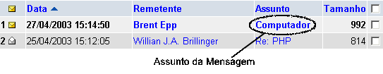

| Para ler a mensagem, encontre a mensagem na
Pasta de Entrada
, e clique no assunto da mensagem.

 Isso trará uma tela parecida com a que está no lado direito do seu navegador (clique nesta imagem se quiser amplia-la):
Isso trará uma tela parecida com a que está no lado direito do seu navegador (clique nesta imagem se quiser amplia-la):
A Barra de Ferramentas é para efetuar ações sobre a mensagem corrente.
A Barra de Cabeçalho contém as mesmas informações que são mostradas na
Pasta de Entrada
. Clique em Cabeçalho Completo para mostrar informações mais detalhadas do cabeçalho da mensagem.
O Texto da Mensagem é o conteúdo da mensagem que o remetente te enviou.
A Barra de Navegação é uma pequena barra de ferramentas que permite a navegação rápida entre diferentes mensagens na mesma pasta. | )